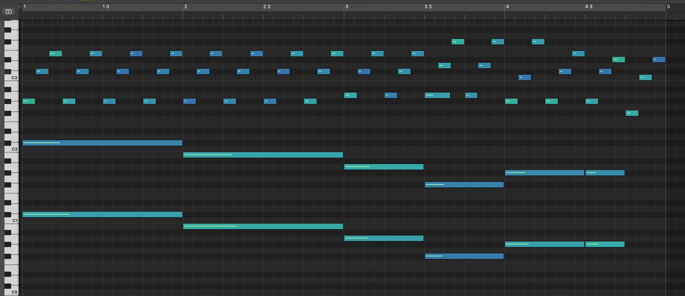
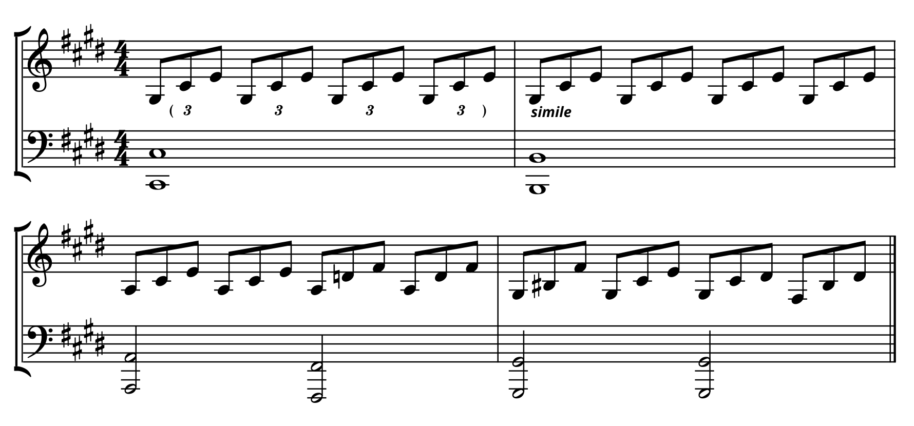

1. 什么是调（Key）
1. 什么是调（Key）
在前面的章节中，我们详细解析了“调性（Tonality）”的核心概念。

在这段音乐中，La、Si、Do、Re、Mi、Fa、Sol 这7个音被挑选出来组成阵列；其中“La”犹如众星捧月般矗立在最核心的“C位重力中心”，统领着所有音符的组织阵型。明明只是一串物理声波，音符之间却形成了严整有序的战队协作——描述这种向心凝聚属性的词汇，正是“调性”。
既然组成了团队，在理论上该如何称呼这支战队的代号呢？为了避免制造过剩的冗余术语，理论家们决定：直接沿用音阶的名称来为团队命名。 以 La 开头的这套自然小音阶的正式名称是“A 自然小音阶（A Minor Scale）”。顺理成章，该乐段所展现的调性格局便被冠名为“A小调（A Minor Key）”。具体指代一首乐曲以哪一套特定音阶架构为骨架铺展而成的核心术语，正是调（Key）。在业内的日常交流中，通常有以下几种地道的表达：

说法一
“这首歌是 A小调（A Minor Key）的曲子。”

说法二
“这首歌的调（Key）是 A Minor。”

说法三
“这首作品是以 A小调写就的。”
无论哪种口吻，表达的物理与音乐事实完全相同。
中文语境下的传统译名
在传统经典音乐中文教科书中，通常将 Key 翻译为调。例如 C major key，C 对应唱名体系下的音名，而“Major”严谨意译为“长”或“大”（在大中华区通常通称为“大调”，如 C大调；日韩古典体系中曾沿用‘长调’如‘ハ长调’）。同理，Minor Key 则规范翻译为“小调”（如 A小调）。
| 英文国际统称 | 中文规范通称 |
|---|---|
| C major key | C大调 |
| A minor key | A小调 |
| E♭ major key | 降E大调（E♭大调） |
| F♯ minor key | 升F小调（F♯小调） |
在现代流行与编曲实战中，大家极度习惯中英混称，直接称呼“C大调”或“C Major Key”最为高效。在本文及后续篇章中，我们统一采用现代通行的“大调 / 小调”或英文“Major / Minor”进行讲解。
音阶（Scale）与调（Key）的精密辨析
由于直接借用音阶名来指代调名，初学者极易将这两个词混为一谈。在此我们再次严格厘清：**音阶（Scale）是指按照音高顺序由低到高（或由高到低）排列开来的那组音符集合本身；而调（Key）**则是指某首具体乐曲是由哪个音阶组织起来的“体系代号”。 因此，“这首歌是 C大调（C Major Key）”在语法上无比通顺自然；但如果说成“这首歌是 C大调音阶（C Major Scale）”，听起来就会产生荒谬的语法扭曲——这好比把“这辆汽车是日本制造”错误说成“这辆汽车是日本”一样令人产生认知违和。“以 C 大调音阶为基础框架构筑而成的整首乐曲体系”，这整层完整含义全被凝练在“C大调（C Major Key）”这一个词组之中。
音阶 (Scale) : 音符集合按特定高低顺序展开的梯级结构本身。
调 (Key) : 特定乐曲所依托的调性具体骨架信息。即：该曲以哪个具体音为重力主音中心、遵循何种音阶音程结构展开。
调性 (Tonality) : 主音与其它各音之间建立的组织向心力关系。即在听觉心理上能够清晰感知到某单一音符在充当引力核心的状态与物理属性。
这组词汇在初学时往往容易混淆，但随着后续深入阅读大量的理论分析，究竟何时该调用哪个词汇，自会水到渠成般融入直觉。
KTV里的“升Key降Key”与音高升降
顺带一提，在 KTV 唱歌时我们常说的“调太高了唱不上去”、“把伴奏升一个调 / 降一个调（升Key / 降Key）”，其中的“Key”正是本节所讲的“调”。 把整首歌曲的音高全盘向上或向下平移，本质上就是把整套音阶材料在键盘上整体横向平移；音阶的实际物理音高变了，其主音与调的名称自然也随之蜕变。例如将一首原本写在 C 大调上的流行歌整体平行上调一个，整首歌便瞬间转换为了 D 大调的曲子。

正是由于卡拉OK等大众语境的流行，导致许多不碰乐器的普通人误以为“Key”指的是“歌唱的音域跨度或绝对高音极限”，甚至在网络上能见到“这首歌的 Key 极宽”等严重词不达意的民间说法。 在严谨的音乐理论中，绝不存在所谓“Key很宽”这种概念。调（Key）仅仅精准描述“以谁为中心、依托何种音阶”。一首只在一个八度内哼唱的民谣，和一首跨越整整4个八度的高难度咏叹调，只要它们都基于 C 大调自然音阶谱写，在乐理上它们全都是纯粹平等的“C大调歌曲”，绝无音域宽窄之别。
关于非西方传统音阶的定调
值得补充的是：虽然全世界存在着无数独特的古老音阶，但“调（Key）”这一体系作为欧洲古典和声学的特定产物，在传统狭义上通常严格指代“自然大调（Major Key）”或“自然小调（Minor Key）”，超出这个传统范畴往往被排斥在外。例如世上存在著名的“弗拉门戈西班牙音阶（Spanish Scale）”，但业界极少会发明“西班牙调（Spanish Key）”这种说法；再如日本冲绳的“琉球音阶”，大家也很少会称其为“琉球调”，而是更习惯直接称呼“这是一首采用琉球音阶创作的歌曲”。这虽然带有某种继承自古典历史惯例的不便之处，但了解这种术语约定能避免很多沟通障碍。
关系大小调（Relative Key / 平行调）
在先前的章节中我们见证过：C 大调音阶与 A 小调音阶共享着完全相同的7个白键。这种亲密血缘纽带在乐理中被称为“关系（Relative）”。 将这一概念迁移至调（Key）的范畴，C 大调与 A 小调互为彼此的关系大小调（Relative Key，日韩有时沿用‘平行调’称呼，但在现代中文体系中通常规范统称为‘关系大小调’）。

日常专业表达示例如下：
例句一
“C大调与 A小调互为关系大小调（Relative Key）。”
例句二
“G大调所对应的关系小调（Relative Minor）是 E小调。”
例句三
“对于 C小调而言，E♭大调正是其关系大调（Relative Major）。”
正如两套孪生音阶的界限有时难以割裂一样，关系大小调之间的调性边界，在流行编曲中同样常常处于流动与交融的微妙状态。
2. 转调（Modulation）
在乐曲进行的中途，所依托的调（Key）发生切换迁移的现象，在音乐理论中被称为转调（Modulation）。转调的发生，意味着乐曲在行进中触发了如下核心重组：
- 乐曲所调用的主干音阶发生变化（所支配的和弦池随之洗牌）。
- 听觉认知的调性中心主音发生物理位移。
在当代流行歌曲中，转调最经典不过的招牌套路，莫过于在全曲临近终盘的最后一次高潮副歌中，如同在 KTV 现场升调一样将整首歌平行向上拔高或全音，以此激发听觉神经的极度亢奋。因为当音高被整体抬升时，歌手必须更加用力地撕裂声带去顶高音，演唱的充血感与爆破感瞬间拉满；即便唱的是完全一模一样的重复旋律，仅仅通过“顺手升个Key”，就能瞬间为整首乐曲锻造出极其辉煌震撼的终局高潮。
以 YOASOBI 的现象级破亿神曲《向夜晚奔跑（夜に駆ける）》为例，全曲中途巧妙运用了整整两次转调：第一次发生是在安静收拢的“蓄力弱副歌（3:12-）”处，在此处调性反常态地向下跌落了半音。调性下沉带来了更加内敛沉郁的幽暗低语，极度放大了弱副歌悬疑寂寥的戏剧冲突；随后在仅隔十几秒的终极爆发大副歌（3:28-）处，旋律从跌落的低谷瞬间原地暴拉跳升3个半音，瞬间在听觉上掀起了排山倒海般的情感狂澜！
最后副歌向上升调是流行歌的大俗经典，但在这之前先特意向下深蹲一脚的做法却极其惊艳大胆，在发行后引发了全网乐评人的狂热解析。对于钢琴或吉他等物理原声乐器而言，转调意味着指法与按键形态要遭遇推倒重来的天翻地覆；但在现代电脑编曲（DAW）的数字环境下，批量框选音符向上拖动不过是数秒钟的鼠标操作，现代技术极大降低了流行编曲尝试激进转调的工程门槛。
不过需要严肃提醒的是：在调性交接转换的那个脆弱瞬间，必须精妙处理——如果过渡处理生硬粗糙，极易造成音阶碰撞打架产生的突兀浑浊感，或者听起来如同粗暴剪辑拼接的“车祸断层”；甚至突然跳跃的超常音阶跨度会给歌手带来灾难性的跑调风险。 想要游刃有余地驾驭转调，离不开深厚和弦连接功底的护航。本教程将在和弦篇第四章中，专章深度拆解各类转调的高阶技法。在此之前，不妨在日常多戴上理论的耳机，从市面各大金曲中暗中偷师其过桥手法。
3. 调号（Key Signature）
接下来，我们将视角切换到乐谱记谱维度，探讨在传统五线谱中该如何规范标记调的归属。

上图是以 Mi 为重力主音构筑的“E 自然大调音阶”。以其为基础骨架写就的作品被称为“E大调作品”。在除 C大调与 A小调之外的绝大多数调式中，必须在部分音符上打上升号（♯）或降号（♭）才是其音阶的天然常态。然而，如果每写一个音符都必须在旁边手动补画一个升号，抄谱与读谱的人非被折磨疯不可：
拉威尔 钢琴名作《水之嬉戏（Jeux d'eau）》：
这首传世名作全曲贯穿在流光溢彩的 E 大调上，倘若按照原始死板的记谱法……

整张谱面瞬间被漫山遍野的升号彻底淹没！……显然，任何理智的音乐家都无法忍受这种视力折磨。于是，音乐史上诞生了一项极为聪明的记谱契约：在乐谱每行谱表的最左端（紧随高低音谱号之后），统一预先画出该调所必需的升降号，以此宣告全行中凡是对应音高的音符默认全部自动升半音或降半音！

彻底告别在每一个音符旁敲敲打打的琐碎，开篇霸气总揽全局。无论后续这些音符登场多少次、出现在哪一个高低八度，一律遵照此令执行。这种集中标明在谱表起始端、统领全篇调性归属的升降记号阵列，被称为调号（Key Signature）。调号在乐谱的整行系统中始终保持绝对威权；反之，每一行五线谱的开头，都必须规范严谨地重复绘制一次调号。
临时记号（Accidental）
与全局调号相对，直接单独绘制在某个具体音符左侧的升降还原记号，被称为临时记号（Accidental / 临时变音记号）。当曲中需要临时借用外调色彩、或通过半音阶装饰音为旋律增添灵动色彩时，临时记号便会登场。
两者在“时空有效范围”上有着天壤之别： 调号具有全局贯穿性——它覆盖整行谱表中的所有音符，且对所有同名的高低八度音符一视同仁统统生效； 相对地，临时记号的威权极为局限——它仅对当前小节内有效，一旦跨过小节线立刻自动失效作废；并且它绝对不会波及上方或下方的其他八度音符！

如上图示范：每当乐谱视线跨过小节线，读谱者的大脑就必须自动重置临时记号的记忆。但在快速视奏的紧张状态下，乐手难免会产生一瞬间的犹豫困惑；为了消除歧义，作曲家或抄谱员经常会在小节线后特意追加一个还原记号（♮），以示仁慈提醒：“请注意，刚才的临时升号已经过期作废了，请放心弹奏原本的还原音哦！”这种充满人文关怀的标记，在业界被称为提示性临时记号（Courtesy Accidental / 亲切记号）。

不过，这份好心有时反而会引来某些自命不凡的老法师的吐槽……

某些挑剔的资深乐手
“搞什么鬼啊！谱子上画个符号还以为有啥特殊大招呢，结果就是个普通还原音！跨小节临时记号自动失效这种三岁小孩都懂的常识，用得着你在这里画蛇添足瞎操心？瞧不起谁呢？！”
人性的百态正是如此难以取悦。为了规避这种无妄之灾，如今规范的乐谱出版社通常会将“提示性临时记号”用小括号包裹起来（如 (♮)），以示这只是善意的安全提示。
五线谱独有的结构性优势
对于习惯在电脑 DAW 宿主软件中鼠标点音符的现代编曲人而言，五线谱看起来或许显得古老繁琐，甚至不如钢琴卷帘（Piano Roll）直观明了。然而五线谱之所以在数百年洗礼中岿然不动，正是因为它拥有一项现代卷帘完全无可比拟的降维打击级神技——它能让你一瞬间精准看破哪些音是‘调内正统音’，哪些音是‘离调打破规则的特殊变音’！
钢琴卷帘中的《月光》奏鸣曲：


在写歌编曲时，为了打破平庸，音乐人极度热衷于借用音阶外的非常规音来点缀惊艳质感。上面这段卷帘是贝多芬举世闻名的《月光奏鸣曲》开篇切片。请凝视它三秒钟：你能立刻指出其中哪几个音符属于跳出原调的非常规离调音吗？……单凭卷帘上千篇一律的长方块，辨识难度极大。 而一旦将其投射在规范的五线谱中：
五线谱中的《月光》奏鸣曲：


下方的谱表中，醒目的临时还原记号（♮）与升号（♯）如暗夜火炬般赫然矗立——哪怕只有初级乐理常识，任何人都能一目了然：这两个音正是超脱于本调基础音阶之外的“神仙点睛之笔”😇😇 钢琴卷帘本质上只是一张冷酷记录物理键位位置的纯坐标纸，它丢失了全部调性上下文的结构信息；而五线谱以当前大小调为默认基底，能够将音乐在情感上的出轨、偏离与回归等动态张力直观具象化地呈现在纸面。
这种信息密度的巨大差距，随着未来在旋律外壳音与进阶和声学中的探索越深，其威能将愈发不可替代。这也是我们由衷希望广大现代音乐制作人不要轻言放弃识谱的核心动因。
调号作为“全自动定调核反应堆”
正如前文所述，在西方传统调性体系的24个大小调中，调号与调名之间存在着严格的数学一一映射锁定：例如谱表开头挂着“4个升号”的调号，在全世界只有两种可能——要么是 E 大调，要么是其关系小调 C♯ 小调！

因此，经验丰富的音乐家一眼扫到4个升号，便能瞬间在脑海中完成定调：“此曲属于 E大调 / C♯小调阵营”。调号远不仅是“指示弹琴按黑键的操作手册”，它更扮演着直接昭告全曲调性灵魂的核心宣告旗帜。 熟悉调号规律的人甚至无需逐个辨认升降线间位置：只要看到“4个升号”，脑海中自动就能映射出被升高的必然是 Fa、Do、Sol、Re 四个音，手指随即顺理成章地落位在对应的黑键之上。
如何凭肉耳反推调性？
看到乐谱调号自然能瞬间判定调名；但当我们摘下乐谱，仅仅凭借一副肉耳去倾听一首打动自己的流行歌时，又该如何神不知鬼不觉地反推其究竟是什么调呢？这背后其实暗藏着一件名扬天下的神秘法宝。请暂且按下好奇心，紧随我们的脚步踏入下一章的探索吧！
核心小结
- 标定整首乐曲所依托的核心主干音阶与引力重心的宏观系统，称为调（Key）。
- 在乐曲中途主音发生位移、音阶阵型整体更迭的现象，称为转调（Modulation）。
- 集中标注在乐谱每行谱表开端的升降记号组合称为调号（Key Signature），它代表着整首乐曲调性的核心身份标识。唯独需要注意：单凭调号无法直接区分究竟是大调还是其关系小调。
- 调号与临时记号的生效空间大不相同：调号统摄全行所有音区；临时记号仅在当前小节内且仅对同八度音符生效。